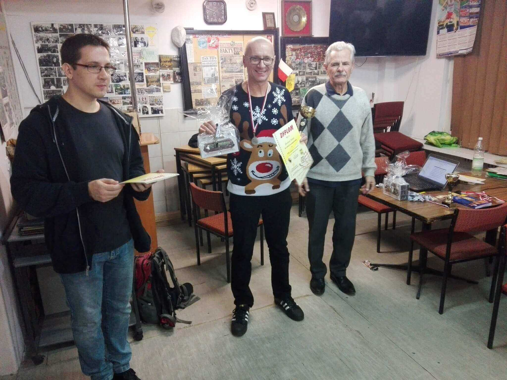
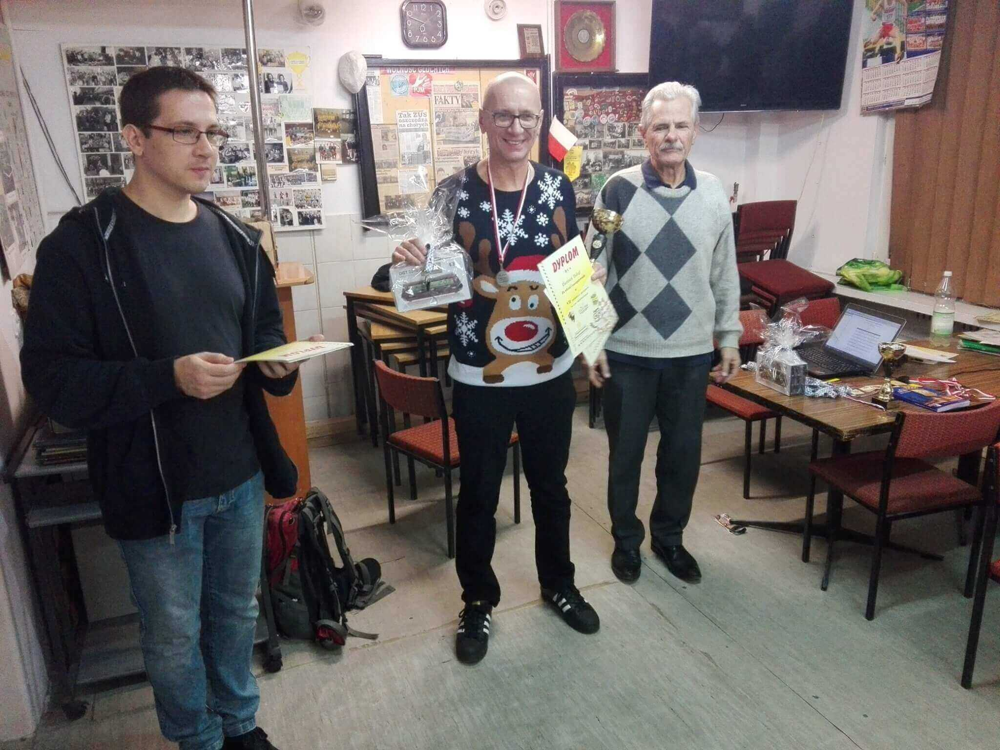
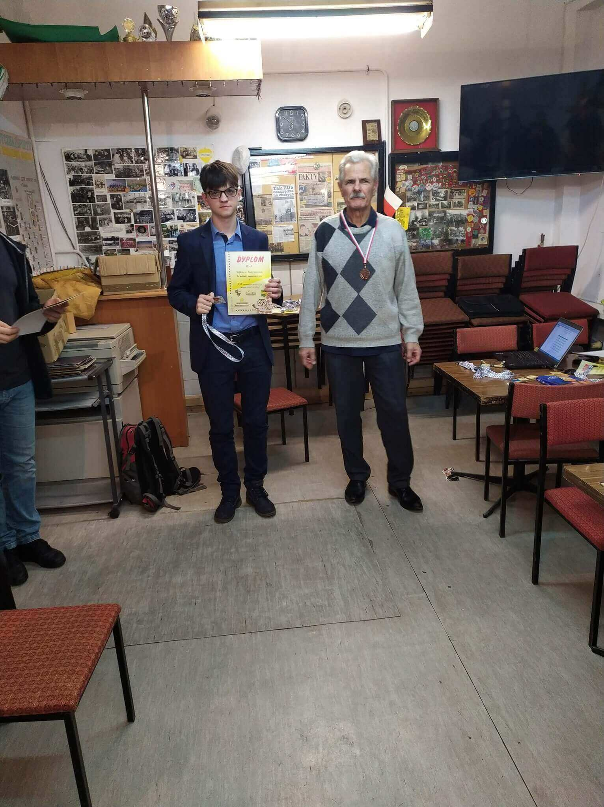
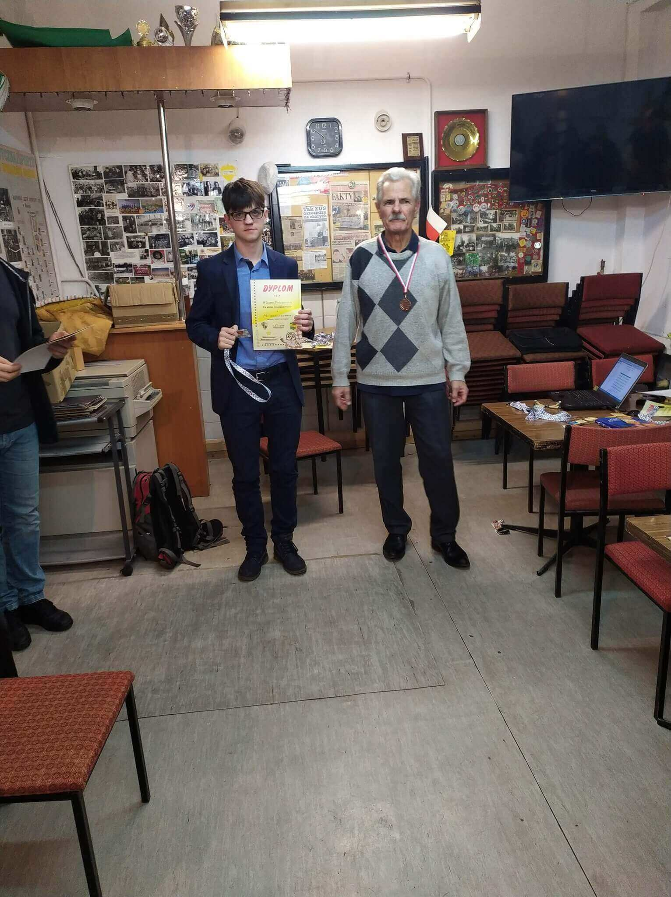
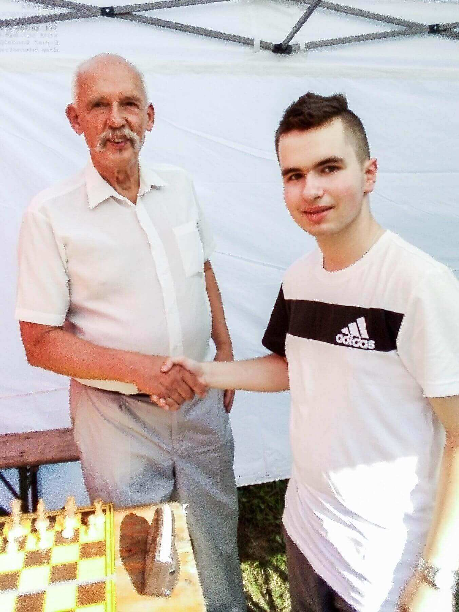
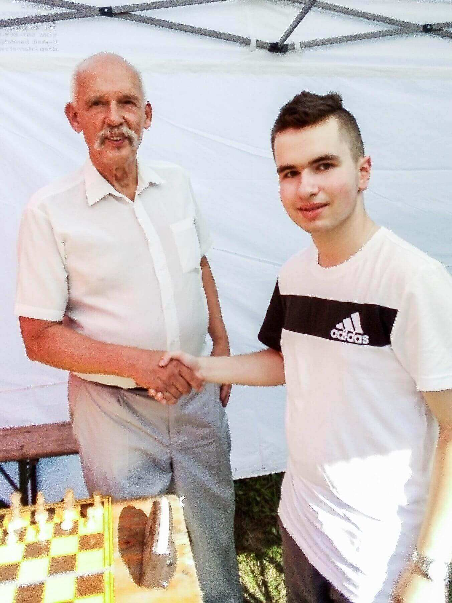

Promocja projektu „Dolina Krzemowa Nad Mleczną”
W ramach projektu organizujemy w 2022 roku następujące zawody szachowe:
II Turniej Szachowy o Puchar Firmy KNM Kominy Na Miarę Janusza Domagały w dniach 09.03. - 20.04.br.
O Firmie â€Kominy Na Miarę”:
Firma â€Kominy Na Miarę†jest jedną z najstarszych firm w Polsce, która zajmuje się techniką wentylacyjną. Począwszy od 1989 roku jest prekursorem wielu nowatorskich rozwiązaÅ„, które znalazły uznanie wÅ›ród tysięcy klientów m.in. Toyota Motor Manufacturing Poland w Wałbrzychu, Lubella S.A. w Lublinie, Elektrownia Milicz, zakłady produkujące części samochodowe FAURECIA. Firma â€Kominy Na Miarę†jest solidnym dostawcą i odbiorcą, co znajduje potwierdzenie w wieloletniej współpracy z renomowanymi firmami. Najwyższa jakość jest wyznacznikiem działaÅ„ Firmy na wielu płaszczyznach biznesu. Aktualny profil Firmy to sprzedaż detaliczna i hurtowa oraz montaż kominów ze stali chromoniklowej, kominów ceramicznych, systemów wentylacyjnych: grawitacyjnych, hybrydowych i mechanicznych. Klientami Firmy â€Kominy Na Miarę†są developerzy, firmy budowlane i instalacyjne, sklepy i hurtownie materiałów instalacyjnych i budowlanych, instytucje paÅ„stwowe, koÅ›cielne, spółdzielnie mieszkaniowe.
Cel turnieju:
- popularyzowanie szachów wśród radomskiej społeczności,
- integracja i sportowa rywalizacja pomiędzy szachistami,
- popularyzacja projektu â€Dolina Krzemowa nad Mleczną”
Organizatorzy:
RKSG â€Radomigâ€, Uczniowski Klub Sportowy â€Roszadaâ€, Kapituła Kultury Szachowej wraz z Akademią Szachową Marka Niedźwieckiego.
Termin:
Podany powyżej.
Program:
09.03.2022 r. 17.20-17.30 weryfikacja zgłoszeń
17.30-17:35 odprawa techniczna
17.35-17:40 uroczyste otwarcie turnieju
17:40 I runda.
Kolejne rundy będą rozegrane w każdą środę od godziny 17:30. Po zakończeniu ostatniej rundy nastąpi uroczyste ogłoszenie wyników i wręczenie nagród.
Miejsce:
RKSG „Radomig”, ul. Mazowieckiego 13 a, Radom. Po uzgodnieniu z Sędzią Turnieju, przełożone rundy można będzie rozgrywać w Klubie „Kwadrat” w Radomiu, ul. Grzybowska 16 we wtorki od godziny 17:00.
Promocja firm:
Szczegóły organizacyjne zawsze podajemy w regulaminie w/w. zawodów. W zamian zamieścimy informację o Państwa Firmie w regulaminie poszczególnych zawodów szachowych. Ponadto na sali gry będzie istniała możliwość wyeksponowania baneru lub rollupu Państwa Firmy. chessarbiter.com/turnieje.
Do chwili obecnej patronat medialny nad projektem i w/w. turniejami szachowymi objęły redakcje: â€Twój Radom†www.twojradom.pl i â€Gość Niedzielny†www.radom.gosc.pl
Opłata startowa:
Opłata startowa wynosi : Grupa â€A†40 zł od osoby. Grupa â€B†30 zł. Zawodnicy RKSG â€Radomig†oraz emeryci są zwolnieni z opłacania wpisowego. Opłatę należy uiÅ›cić na konto UKS ROSZADA: PEKAO SA II O/Radom 02 1240 3259 1111 0010 1286 5311 lub w dniu zawodów.
System rozgrywek:
Turniej zostanie rozegrany systemem szwajcarskim na dystansie 7 rund z tempem: - Grupa â€A†P'50+10†na posunięcie. - Grupa â€B†P'25+5†na posunięcie Dopuszcza się inny system rozgrywek w zależnoÅ›ci od iloÅ›ci zgłoszeÅ„. W turnieju â€A†można zdobyć kategorię III lub II. Natomiast w Grupie â€Bâ€- V lub IV.
Pozostałe przepisy:
W turnieju obowiązują przepisy gry FIDE, według aktualnego â€Kodeksu Szachowego†Polskiego Związku Szachowego. O kolejnoÅ›ci zajętych miejsc w turnieju decyduje ilość zdobytych punktów. Organizatorzy zastrzegają sobie prawo zmian w regulaminie. W przypadkach spraw nieuregulowanych regulaminem lub związanych z jego interpretacją, ostateczną decyzję podejmuje Sędzia Główny (w sprawach sportowych) oraz Dyrektor Turnieju (w sprawach organizacyjnych). W sprawach spornych zostanie powołana komisja w składzie: Sędzia Główny, przedstawiciel organizatora, przedstawiciel uczestników (niebędący stroną sporu). Uczestnicy rozgrywek ubezpieczają się we własnym zakresie. Zgłoszenie się do turnieju jest równoznaczne z zaakceptowaniem postanowieÅ„ niniejszego Regulaminu. Zawodnicy zobowiązani są zachować szczególne zasady bezpieczeÅ„stwa, zgodnie z powszechnie obowiązującymi przepisami, w tym z zaleceniami Głównego Inspektora Sanitarnego oraz stosować się do aktualnych obostrzeÅ„ wprowadzonych w związku z zapobieganiem, przeciwdziałaniem i zwalczaniem rozprzestrzeniania się epidemii SARSCOV2.
Współpraca:
MK Janusz Domagała spółka jawna www.kominynamiare.pl
Biuro Rachunkowe Mirosława Siczek
Conwex Serwis www.conwex.pl
Virgo Poligrafia www.virgo.net.pl
Patronat medialny:
Dwutygodnik â€Twój Radom†https://twojradom.pl
â€Gość Niedzielny†https://www.radom.gosc.pl

Radom, 02.02.2022r.
Dyrektor Turnieju /-/ Marek Niedźwiecki


 



 

 
